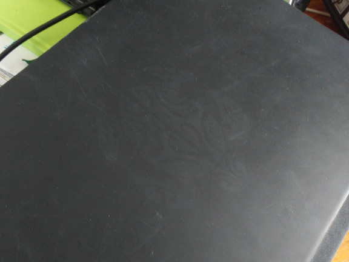

Joe's things I use
My computing experience
These are the things I use in my day-to-day computing experience both at home and work. As I enjoy working from my computer and tweaking it, I recommend them all.
My configuration files for some of these softwares can be found on my dotfiles repo on GitJoe. My wallapers can be found on this page.
Software

My neofetch
-
Text editing
Custom configured GNU Emacs to be used with vim key bindings. It is not the most lightweight editor out there but I love my config for all kind of coding or text editing. I use the GUI version. -
OS
FreeBSD 13 is my OS of choice. I left GNU/Linux for BSD about 1 year ago and I never felt the need to go back! -
Window manager
dwm is my favorite tiling window manager and the only one I use for it is very light and highly extensible. -
Terminal emulator
st is my favorite terminal emulator. Just like dwm, it's very light and highly extensible. -
Shell
I use zsh as my only interactive shell. -
Other software
Here is a small list of programs I use frequently. Most are terminal-based.- web browser: Mozilla Firefox for most web browsing. I also use w3m and lynx quite a lot.
- file manager: lf
- image viewer: nsxiv
- video player: mpv
- music player: mpd + ncmpc
- pdf viewer: zathura
- RSS feed reader: newsboat
- email client: neomutt running with isync and msmtp
- address book: abook
- calendar: calcurse
- IRC client: irssi
-
Games
I haven't played much video games in recent times but here's what I used to play a lot:- Kerbal Space Program on my Linux machine, I loved this game!
- Classic DOOM and Hexen through gzdoom, it runs very smooth on BSD.
Hardware
My computer is a ThinkPad T530 and I love it. Unfortunately I bought it used and the previous owner forgot to tell me there was an ugly turtle tattooed on the rear side. This is my only complain. It's not too visible but it's there. The deal was quick, there was not much lighting and the seller opened the screen right away, so I didn't see that ugly turtle until I was home with my new computer.
Here is the hardware config:
- Intel i5-3320M 2.60GHz, 4 threads
- 8GB RAM
- 500GB SSD
- 1TB HDD
I know it's not crazy good but I can do all my work and my media consumption with it so I consider myself a tech-happy guy.

The ugly turtle
Other notable hardware
I have a RaspberryPi 4 I received from a friend as a christmas gift. It runs FreeBSD of course. I use it to learn I2C/GPIO programming with a bit of electronics. I am looking for some projects for it.
I have a Casio F-91W watch gifted by a friend too so I never loose time. Adult people tend to show more respect towards people wearing watches too, just like they do with people with wives or kids, so there's that.
Last piece of hardware worth noting is my keyboard: a Leopold FC900R PD with Cherry MX Brown switches. It is so good I plan on buying maybe 5 of them in the future so I don't need to worry and I can just use it the same model for all my life. I might check some of the Unicomp Model M remakes when they are available again.